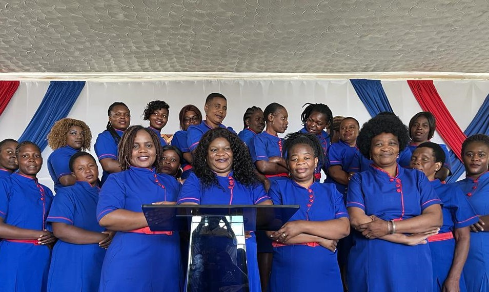

Women ministry was founded by our mother Rev Desire Cedric with the vision of raising Proverbs 31 woman with a "Godly character".The ministry has grown to be backbone of the church , raising powerful intercessors and kingdom financers who support te church's projects. Women meet every Thursdays for their meetings,being taught
Men's ministry was founded by our father Bishop Maxwell Cedric with the vision of transforming men to love "Christ as He loved the Church".The ministry encourages men to help to stand in the gap for the work of God , helping in church projects.
RFMI Youths are the Young Caleb and Joshua's that God is raising to love God and be on fire for God being influential in the society. The youths are active more in
This is the Hope for tommorow, the children are groomed, having the chance to grow , learn and experience the love of God.The teachers also help in teaching them the Bible stories and memory verses that help their minds to be focused on Christ.